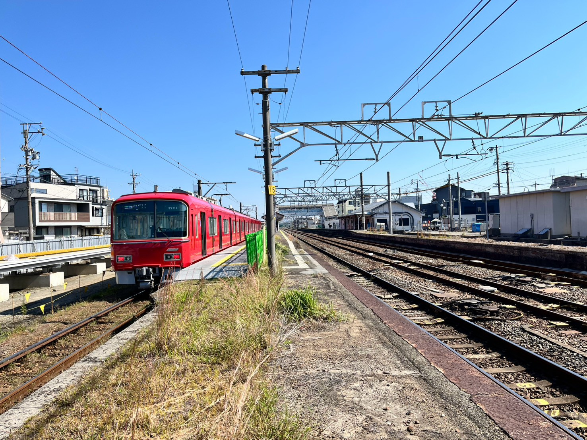
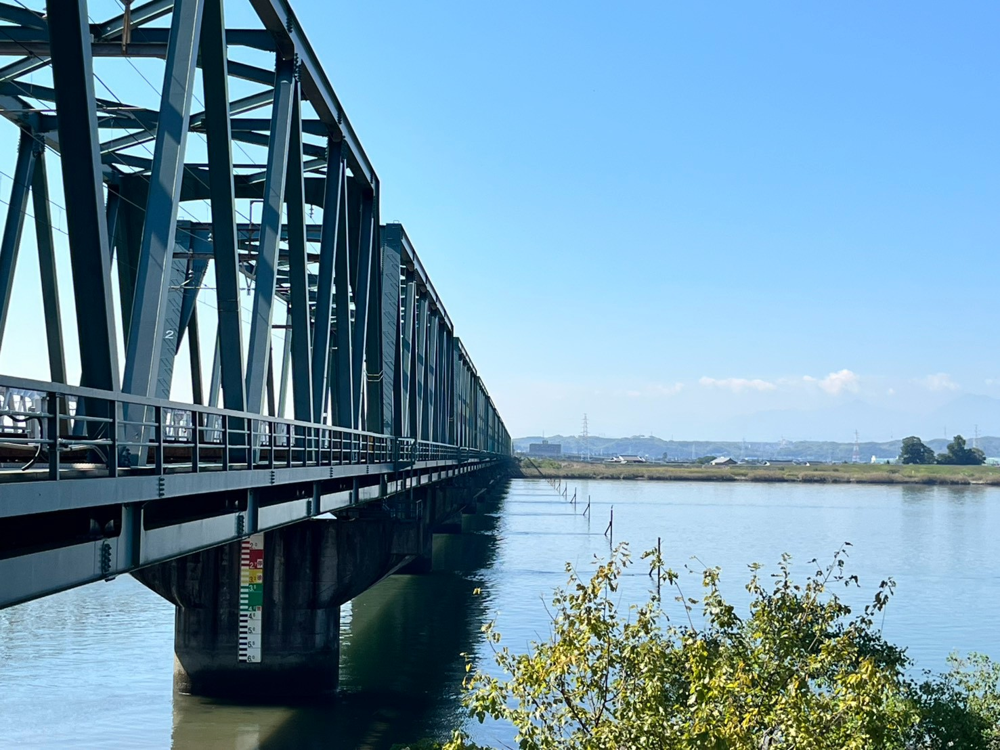
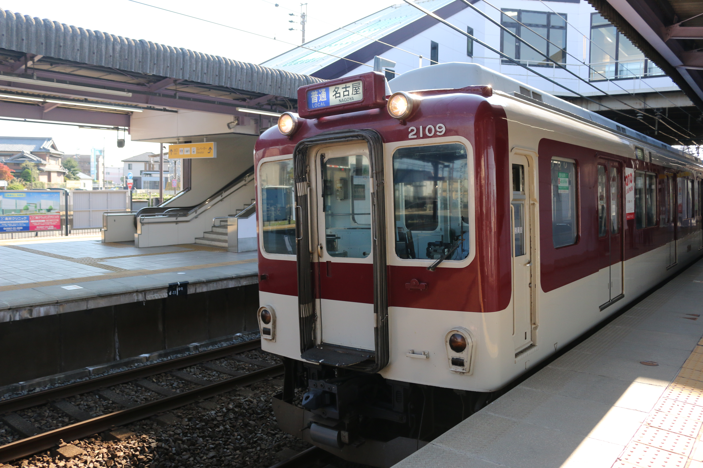
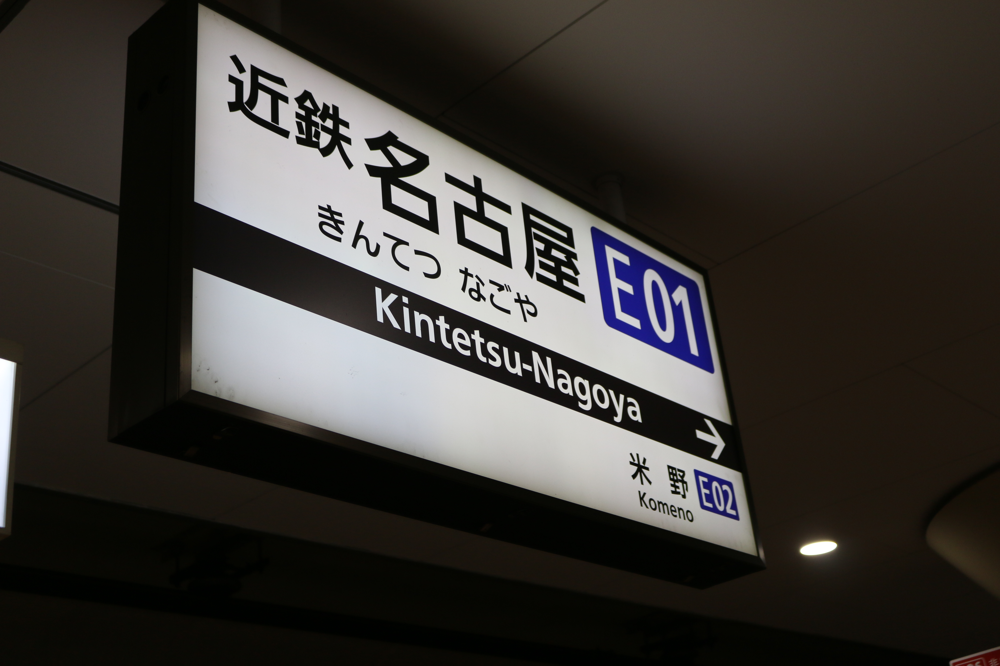
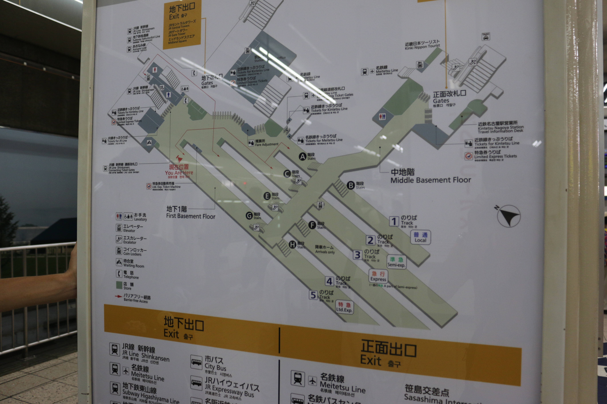

【弥冨探訪】
2026/10/12
概要
はてさて、三連休とテスト終わりが重なるとどこかに行きたくなるものである。
でだ、このブログでは初出ではあるが、（南海道遠征の友達をA・Bとした場合）
Cという友達がいる。彼とは、中学校での親友なのだが、中学卒業後なかなか会うことができず、一年前に会ったかな？
みたいなのが結構ざらになってしまっている。
でだ、そんな彼の誕生日は10/6。みんなの予定も空いている。これは、久々に会おう！となったわけである。
（Bは行かない・・・ってか多分ほぼ出てこないと思う・・・。）
で、まぁカラオケだけ―とかはつまらないというかなんというか・・・。
行ったことないところ行きたいよなぁ・・・。だけど大体行き切ったよなぁ・・・。
あ、まだ未踏破の場所があった！弥冨（津島方面）だ。よしそうと決まれば行ってみよう。
これが概略である。まぁざっと言ってしまうと2026年10月11日に弥冨に行った、ってことです。
一応フィルム消費のために・使用実験のためにNicon U2を使ってみました。
使用フィルムはFUJIFILM NEOPAN 400 PRESTOです。（2015/12期限）
（また現像してないのでCanon EOS 70Dが画像主体になってます。一部友達のも
紛れ込んでますが・・・。）
内容
ささ、そんなこんなで九時集合。また太田川に集合ですね。

で、そっから特急岐阜に乗り込んで一旦、名古屋に向かいました。そして乗り換えして急行一宮に、
須ヶ口で普通弥冨行きに接続しているのでそれに乗り込んで弥冨に向かいました。
そして、下車。

びっくりしたんですけど、ここ弥冨駅ってJRとの”共用”だったんですね。 なので駅から降りるときとか豊橋駅とかと同じように乗り返します。予習なんかをしたいなら JR東海の公式案内 を見ておくといいでしょう。 で、これは弥冨駅の改札なのですが

明確に名鉄を使わせたくない感がヒシヒシと感じて面白かったです。
さ、まずは歩いて数分近鉄の駅に向かいました。

ホントにね、私は夢でも見ているのかと、有り得ないものなのを見ているのかと、そんな第一印象でした。 だって、JR駅よりも近鉄駅のほうが綺麗どころかすべてにおいて優位に立っているのです。これは さっすがにビビるでしょ。そんなに変だと思うなら行ってみてくださいよ。
そして駅構内とかでうだうだやっていたからなのかたまたまお祭り？の祭列に遭遇しました。

駅構内にいるときからなにがしかの祭礼の音は聞こえてましたが、まさかドンピシャで会うとは・・・。 運がいいのかもしれないな。
ま、そんなこと書いててもしょうがないですね。 でそっから歩いてとあるモノを見るためにちょっと歩きました。
歩いてる途中というか駅の近くに面白いものがありました。

新聞の自動販売機ですね。筆者は初めて見たんですが東京とかだと結構普通なんですかね？ どうなんでしょう？
そして着きました。私たちが見たかったのはこれですね。

そう、いきなり見せられても、「は？」となるのが普通です。 これは近鉄線の名古屋本線の旧本線跡ですね。

なんか、詳しいことは専門家じゃないので言えないんですが、兎に角 橋を付け替えたので、それの旧線側ですね。
で、これの遺構をさらに見るために木曽川橋梁に行きました。

左から、道路用橋梁・近鉄鉄道橋梁・旧国鉄（現JR東海）鉄道橋梁ですね。 でこのJR橋梁の右側に旧近鉄の橋梁がありました。

この橋の横の水面に棒が突き刺さってるところが元の橋です。 なんか、ショボいというかインパクトに欠けるというのか・・・。 まぁ友達、それも親友といたらなんでも楽しくなります。
で、ここの橋の下でちょっと談義？雑談を体感一時間くらいやってました。 Cに教えてもらってんですけど「死ぬか生きるかの戦い」「仮面舞踏会」って曲が 最近の話題？らしいですね、ダサすぎて。やっぱり自分はあんまりヒットチャート抑える タイプではないので結構こういう情報提供は助かりますね。

（話しながら試しにU2を撮ってみた。ピントが合ってないのが技術不足が滲み出る・・・。）
で、話しながら撮り鉄したり音鉄したり・・・みたいなのしてました。

まぁ自分は鉄道”ヲタク”ってほど詳しくもないですが、なんかこう言ったものは惹かれるものがありますね。
で、そろそろお腹もすいたしなぁ・・・ってことで近く？のAEONに行きました。 そこのサイゼリヤで昼飯を食して、ゲーセンとかセカストでちょっと時間を潰しつつ、帰りました。 帰りは歩いて近鉄弥冨駅まで向かい、普通名古屋行きに乗り込みました。

で、ゆったりと着実に名古屋に向かいました。 で、近鉄名古屋に到着しました。

基本的に名古屋人、引いては尾張県人は名鉄使用率がかなり高いと思うのだが、 基本的に慣れ親しんだ人専用の駅と言っても名鉄名古屋駅は過言ではない。 なのでたまに”ルール”をわかってない人が出てくると「こいつ・・・」みたいな空気感が漂ったりする。
まぁそんな駅構内も改良工事をするために名鉄百貨店を閉めたりしたのに、肝心のゼネコンが下りたりで めっちゃくちゃだからなぁ・・・。（遠い目） どうしてこうも鉄道会社というのは一個くらいキモキモポイントを作ってしまうのか・・・。（KQとかKQとか・・・）
そんな駅ばっかり見てる人からすると近鉄名古屋駅の構造は惚れ惚れするくらい、簡潔で・整然で・小規模で・美しい。

全く・・・迷鉄も見習えよ・・・。これだから名古屋人は・・・（自己批判）。
で、太田川に向かい、解散しました。
総括
これで、愛知県内の乗ってない鉄道会社は愛知環状鉄道と上飯田線を残すのみとなりました。
なるべく早くコンプリートしたいものである。
・・・出来れば友達と、ね。一人だとあんまり思い出にならないから。
あとは、「近鉄・名鉄/JR駅を一個にしろよ」と感じましたね。歩いて数分・・・も言い過ぎなくらい、数十秒くらいで
着きますし、地下通路とかも作ろうと思えば作れそうなくらいの距離だったので。
まぁ路線の付け替えとか色々面倒だし、高価だからやらないんだろうけどさ・・・。知多半島民としては
名鉄知多半田・JR半田駅とか名鉄知多武豊・JR武豊駅とかに似たものを感じますね・・・。
何故にこうも直通させたがらないんだろうか？お客の取り合いとかしたくないのかなぁ？
あと、近鉄に言いたいのは、「場所譲れ」ですね。名鉄の状況から見たらホーム一個くらい譲ってほしいくらいでしょ。
だけどたとえ一緒の会社になったとて、ホームぐっちゃぐちゃで統一するのなんて無理そうだしな。
まぁ名鉄君もいつかは名鉄名古屋駅を改革するだろうし、あの惨状も私が生きてる間には変わるでしょ（小並感）。
あとは、弥冨方面っててっきり田んぼばっかりみたいな、駅前周辺に住居が密集してて大通りとかそういったものから
外れるとすぐと田んぼとかが見えるような感じかなと思ったら結構・・というか知多半島だと半田市並みに栄えてましたね。
弥冨をあんまり馬鹿にできない感じだなぁ。